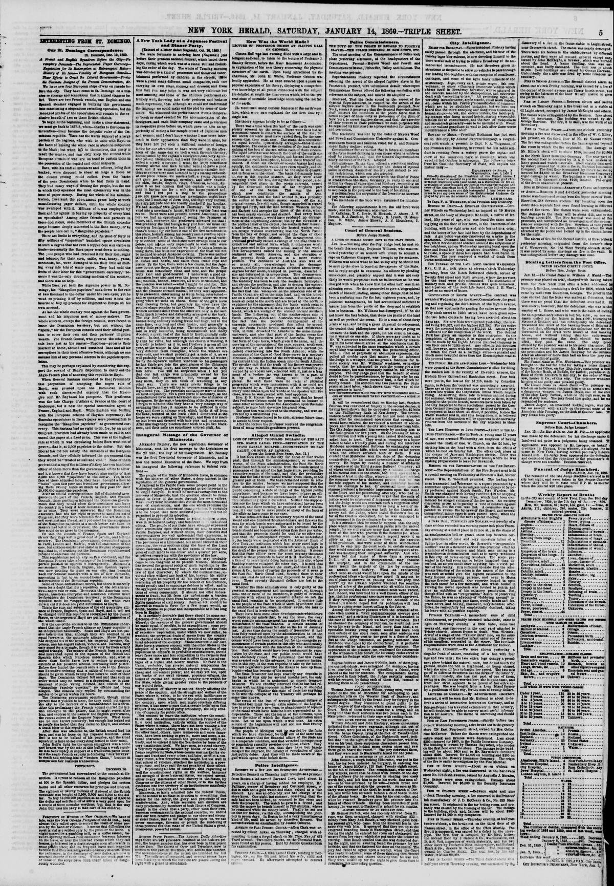

Interesting from St. Domingo.Interesante desde Santo Domingo.
The New York Herald. New York [N.Y.], January 14, 1860. Page 5. Also published as the New York Daily Herald. Published by James Gordon Bennett. A daily newspaper, 1840–1920.The New York Herald. New York [N.Y.], 14 de enero de 1860. Página 5. También publicado como New York Daily Herald. Publicado por James Gordon Bennett. Periódico diario, 1840–1920. View the originalVer el original

According to The New York Herald on January 14, 1860, Hayti's consuls returned with new demands amounting to an unconditional surrender of the Dominican Republic's independence, backed by a quadruple alliance of France, England, Spain, and Hayti. The newspaper reported that these demands seek to forbid American commerce, enterprise, and citizens from Dominican territory and force submission to Hayti, arguing that this situation will persist until the republic is recognized by the United States or Hayti takes full possession of the island.Según The New York Herald del 14 de enero de 1860, los cónsules de Haití regresaron con nuevas exigencias que equivalían a una rendición incondicional de la independencia de la República Dominicana, respaldadas por una cuádruple alianza entre Francia, Inglaterra, España y Haití. El diario reportó que estas exigencias buscaban prohibir el comercio, las empresas y los ciudadanos estadounidenses en territorio dominicano y forzar la sumisión a Haití, sosteniendo que esta situación persistiría hasta que la república fuera reconocida por los Estados Unidos o Haití tomara posesión total de la isla.
FULL TEXT:TEXTO COMPLETO:
INTERESTING FROM ST. DOMINGO.INTERESANTE DE SANTO DOMINGO.
Our St. Domingo Correspondence.Nuestra Correspondencia de Santo Domingo.
ST. DOMINGO, Dec. 13, 1859.SANTO DOMINGO, 13 de diciembre de 1859.
A French and English Squadron Before the City—Peremptory Demands—The Depreciated Paper Currency—Requisition for Its Redemption at Extravagant Rates—History of Its Issue—Venality of European Consuls—Their Efforts to Crush the Liberal Government—Probable Ultimate Designs of the Present Demonstration, &c.Una Escuadra Francesa e Inglesa Ante la Ciudad —Demandas Perentorias —La Moneda de Papel Depreciada —Requisición para su Redención a Tasas Extravagantes —Historia de su Emisión —Venalidad de los Cónsules Europeos —Sus Esfuerzos para Aplastar el Gobierno Liberal —Probables Designios Últimos de la Presente Demostración, etc.
We have now four European ships of war on parade before this city. They have come to St. Domingo on a mission so strange and scandalous that it almost staggers belief. There are two French vessels, one English and one Spanish steamer engaged in bullying this government into sanctioning a stupendous swindling operation, but the moneyed profits of the speculation will remain to the exclusive benefit of two or three British officials.Ahora tenemos cuatro buques de guerra europeos en parada ante esta ciudad. Han venido a Santo Domingo en una misión tan extraña y escandalosa que casi tambalea la creencia. Hay dos buques franceses, uno inglés y un vapor español empeñados en intimidar a este gobierno para sancionar una operación de estafa estupenda, pero las ganancias monetarias de la especulación permanecerán para el beneficio exclusivo de dos o tres oficiales británicos.
To begin at the beginning, and make a clear statement, we must go back to 1857-8, when—thanks to European intervention—Baez became the despotic ruler of the Dominican republic. Baez has the warm support of a large portion of the negroes, who wish to unite with Hayti on the basis of holding the white race in absolute subjection to the black; but when left to themselves, this party is much the weaker, and can only keep the control while European vessels of war are on hand to sustain them in the possession of the capital and other seaports.Para comenzar por el principio, y hacer una declaración clara, debemos regresar a 1857-8, cuando —gracias a la intervención europea— Báez se convirtió en el gobernante despótico de la república dominicana. Báez tiene el apoyo cálido de una gran porción de los negros, que desean unirse con Haití sobre la base de mantener a la raza blanca en sujeción absoluta al negro; pero cuando dejados a sí mismos, este partido es mucho el más débil, y solo puede mantener el control mientras buques de guerra europeos están a mano para sostenerlos en la posesión de la capital y otros puertos marítimos.
Baez, with his staff of ministers and officers, being thus backed, were disposed to shear as large a fleece as the closest cutting could collect from the backs of the poor Dominicans while he had them in hand. They had many ways of fleecing the people, but the one in which they operated the most extensively was in the issue of paper money. During the whole of his administration, Baez kept the government press hotly at work manufacturing paper dollars, until the whole country was swamped with it. Millions of it was employed by Baez and his agents in buying up property of every kind on speculation? Among other friends and partners in these operations, some members of the British consular corps became deeply interested in the Baez money, or as the people here call it, “Mangolino papeletes.”Báez, con su personal de ministros y oficiales, estando así respaldado, estaban dispuestos a esquilar una lana tan grande como el corte más cercano pudiera recoger de las espaldas de los pobres dominicanos mientras los tuviera en mano. Tenían muchas maneras de despojar al pueblo, pero la una en que operaron más extensamente fue en la emisión de papel moneda. Durante toda su administración, Báez mantuvo la prensa del gobierno calientemente trabajando fabricando dólares de papel, hasta que todo el país fue inundado con él. Millones de él fueron empleados por Báez y sus agentes en comprar propiedad de toda clase en especulación? Entre otros amigos y socios en estas operaciones, algunos miembros del cuerpo consular británico se interesaron profundamente en el dinero de Báez, o como la gente aquí lo llama, «Mangolino papeletes».
There are limits to everything, and the issue of forty or fifty millions of “papeletes” banished specie circulation to such a degree that not even a copper coin was visible in trade—necessarily the Baez paper went down to nothing. The poor people who had received it for their rice, sugar and tobacco; for their corn, cattle, wax, honey, yams, cocoanuts, &c., were dismayed to see their little all melting away into bits of waste paper. They had sold the fruits of their labor for this “government currency,” because it was the only circulating medium of the country, and there was no help.Hay límites para todo, y la emisión de cuarenta o cincuenta millones de «papeletes» desterró la circulación de especie a tal grado que ni siquiera una moneda de cobre era visible en el comercio —necesariamente el papel de Báez bajó a nada. La pobre gente que lo había recibido por su arroz, azúcar y tabaco; por su maíz, ganado, cera, miel, ñames, cocos, etc., estaba consternada al ver su pequeño todo derritiéndose en pedazos de papel de desecho. Habían vendido los frutos de su labor por esta «moneda del gobierno», porque era el único medio circulante del país, y no había ayuda.
While Baez yet held the supreme power in St. Domingo, his “Mangolino papeletes” sunk down to the rate of two thousand to the dollar under his own eyes; yet he went on printing it off by millions, and sent it into the interior to buy up produce for shipment to Europe on his own account.Mientras Báez todavía sostenía el poder supremo en Santo Domingo, sus «Mangolino papeletes» se hundieron hasta la tasa de dos mil por dólar bajo sus propios ojos; sin embargo continuó imprimiéndolo por millones, y lo envió al interior para comprar productos para envío a Europa por su propia cuenta.
At last the whole country rose against the Baez government and his iniquitous nest of money-makers. The whole concern, except the foreign consuls, were forced to leave the Dominican territory, but not without the “spoils,” for the European consuls used their official position to cover their own and their partners’ ill-gotten wealth. The French Consul, who governs the other consuls here just as his master—Napoleon—governs their masters at home, abetted and sustained Baez and all his corruptions in their most offensive forms, although no one accuses him of any personal interest in the papelete speculation.Por fin todo el país se levantó contra el gobierno de Báez y su inicuo nido de hacedores de dinero. Todo el asunto, excepto los cónsules extranjeros, fueron forzados a dejar el territorio dominicano, pero no sin los «despojos», pues los cónsules europeos usaron su posición oficial para cubrir su propia riqueza mal obtenida y la de sus socios. El Cónsul francés, que gobierna a los otros cónsules aquí justo como su amo —Napoleón— gobierna a sus amos en casa, apoyó y sostuvo a Báez y todas sus corrupciones en sus formas más ofensivas, aunque nadie lo acusa de interés personal alguno en la especulación de los papeletes.
This may be perhaps explained by considering this support the reward of Baez’s disposition to carry out the Anglo-French plan of annexing this republic to Hayti.Esto puede quizás explicarse considerando este apoyo la recompensa de la disposición de Báez a llevar a cabo el plan anglofrancés de anexar esta república a Haití.
When General Santana succeeded to the Presidency this proposition of accepting the negro rule of Hayti, was pressed upon the Dominican Cabinet with such disrespectful urgency that the Executive sent Mr. Raybaud his passports. This gentleman was the late Charge d’Affairs of France at the court of Soulouque, but is now the special annexation agent of France, England and Hayti. While Santana was battling with the European scheme of Haytien supremacy, the Consular speculators in Baez’s paper were pressing him to recognise the “Mangolino papeletes” as government currency. This Santana had no right to do, for, by an act of Congress, provision had already been made to call in and cancel this paper at a fixed price. This was at the highest rate at which it was circulating before Baez went out of power—that is, at 2,000 papeletes to the dollar. But this liberal law did not satisfy the demands of the European Consuls, and they officially informed the government that they would be “treated as null and void.” None of them pretend that a rag of the millions of it they have on hand cost either of them more than the government offers to allow and it is known that they have bought nine-tenths of it at 3,500 and 4,000 “papeletes” to the dollar. Yet, in the face of these admitted facts, they have brought a fleet to “insist” upon this poor and friendless government allowing them twenty times as much as they paid for their 18,000,000 mangolino papeletes.Cuando el General Santana sucedió a la Presidencia esta proposición de aceptar el gobierno negro de Haití, fue presionada sobre el Gabinete Dominicano con tal urgencia irrespetuosa que el Ejecutivo envió al Sr. Raybaud sus pasaportes. Este caballero fue el difunto Encargado de Negocios de Francia en la corte de Soulouque, pero ahora es el agente especial de anexión de Francia, Inglaterra y Haití. Mientras Santana batallaba con el esquema europeo de supremacía haitiana, los especuladores consulares en el papel de Báez lo presionaban para reconocer los «Mangolino papeletes» como moneda del gobierno. Esto Santana no tenía derecho de hacer, pues, por un acto del Congreso, provisión ya se había hecho para llamar y cancelar este papel a un precio fijo. Esto era a la tasa más alta a la cual circulaba antes de que Báez saliera del poder —es decir, a 2,000 papeletes por dólar. Pero esta ley liberal no satisfizo las demandas de los Cónsules Europeos, y oficialmente informaron al gobierno que serían «tratados como nulos y vacíos». Ninguno de ellos pretende que un trapo de los millones de él que tienen en mano le costara a cualquiera de ellos más de lo que el gobierno ofrece permitir y se sabe que han comprado nueve décimas partes de él a 3,500 y 4,000 «papeletes» por dólar. Sin embargo, ante estos hechos admitidos, han traído una flota para «insistir» en que este pobre y sin amigos gobierno les permita veinte veces tanto como pagaron por sus 18,000,000 mangolino papeletes.
After an official correspondence full of dictatorial arrogance on the part of the French, English, and Spanish Consuls, these gentlemen informed the Dominican government that they would close their consulates and leave the country in a body if their demands were not acceded to at once. They were answered that the Dominican executive had not the right or power to annul an act of Congress, and they were reminded that the act was in itself most just and liberal, as it provided for the acceptance of the Mangolino papaletes at a much better rate than its makers had left it in circulation; the government therefore could do no more in the premises.Después de una correspondencia oficial llena de arrogancia dictatorial por parte de los Cónsules francés, inglés y español, estos caballeros informaron al gobierno dominicano que cerrarían sus consulados y dejarían el país en cuerpo si sus demandas no eran accedidas de una vez. Fueron respondidos que el ejecutivo dominicano no tenía el derecho o poder de anular un acto del Congreso, y se les recordó que el acto era en sí mismo sumamente justo y liberal, ya que proveía para la aceptación de los Mangolino papaletes a una tasa mucho mejor que sus hacedores lo habían dejado en circulación; el gobierno por tanto no podía hacer más en el asunto.
On this the Consuls of France, Spain and England struck their flags with a great deal of parade, and left the country. The Dominican government despatched agents to Paris, London and Madrid, with full statements of the case, but all those courts have united in the plan of suppressing—that is, of crushing out the Dominican republic—and refused to entertain the question.Sobre esto los Cónsules de Francia, España e Inglaterra bajaron sus banderas con mucha parada, y dejaron el país. El gobierno dominicano despachó agentes a París, Londres y Madrid, con declaraciones completas del caso, pero todas esas cortes se han unido en el plan de suprimir —es decir, de aplastar la república dominicana— y rehusaron entretener la cuestión.
This republic has not an ally on this continent, and the European Powers take advantage of its friendless, unsupported position to oppress it outrageously. Revenons a nos moutons. The French, English, and Spanish squadron now pointing its guns on our city, has brought back our consular masters with a list of new demands, amounting in fact to an unconditional surrender of the independence of the Dominican republic.Esta república no tiene un aliado en este continente, y las Potencias Europeas se aprovechan de su posición sin amigos, sin apoyo para oprimirla indignamente. Revenons a nos moutons. La escuadra francesa, inglesa y española ahora apuntando sus cañones a nuestra ciudad, ha traído de vuelta a nuestros amos consulares con una lista de nuevas demandas, ascendiendo en efecto a una rendición incondicional de la independencia de la república dominicana.
Some of these demands are secret, but there is scarcely room for a doubt that it is a repetition of the old alternative—negro rule or ruin. Be certain that American commerce, American enterprise and American citizens must be forbidden the Dominican territory, or the Dominican republic must be “suppressed,” and the white race driven out if it does not yield submission to Hayti.Algunas de estas demandas son secretas, pero escasamente hay lugar para una duda de que es una repetición de la vieja alternativa —gobierno negro o ruina. Estén ciertos de que el comercio estadounidense, la empresa estadounidense y los ciudadanos estadounidenses deben ser prohibidos del territorio dominicano, o la república dominicana debe ser «suprimida», y la raza blanca expulsada si no cede sumisión a Haití.
This is the sum and substance of the old quadruple alliance of France, England, Spain and Hayti, and it will not be changed until this republic is recognized by the United States, or the negroes of Hayti are put in full possession of the whole island.Esta es la suma y sustancia de la vieja alianza cuádruple de Francia, Inglaterra, España y Haití, y no será cambiada hasta que esta república sea reconocida por los Estados Unidos, o los negros de Haití sean puestos en posesión plena de toda la isla.
It is the cue of the consuls to let the Dominicans understand that the Anglo-French alliance no longer consider it an independent nationality. Spain and Hayti are but passive tails to this kite, although they are counted in as equal Powers in the quadruple alliance. Since Faustin has dropped out of the square, his imperial brother, Napoleon, and his august sisters, Victoria and Isabella, may only stand for a triangle, though it is very far from a right angled triangle. The square of the French base is a good deal more than equal to the square of the British and Spanish sides which Napoleon subtends, and, what is more than Euclid knew how to reduce to geometry, extends at his pleasure without increasing their power. Before they landed the consuls sent a note to the Dominican Executive ordering that a salute of twenty-one guns should be given within twenty-four hours to each of their flags. The Dominican Cabinet felt and said that such an order would only be issued to a dependent, or in chastisement of some wrong inflicted, and outside of the “Mangolino Papelete question” no offence had been alleged. The consuls only replied by commanding the salutes to be given within six hours.Es el turno de los cónsules hacer entender a los dominicanos que la alianza anglofrancesa ya no la considera una nacionalidad independiente. España y Haití son solo colas pasivas a esta cometa, aunque son contados como Potencias iguales en la alianza cuádruple. Desde que Faustino ha salido del cuadrado, su hermano imperial, Napoleón, y sus augustas hermanas, Victoria e Isabella, pueden solo representar un triángulo, aunque está muy lejos de ser un triángulo rectángulo. El cuadrado de la base francesa es mucho más que igual al cuadrado de los lados británico y español que Napoleón subtiende, y, lo que es más de lo que Euclides supo reducir a geometría, se extiende a su placer sin aumentar su poder. Antes de desembarcar los cónsules enviaron una nota al Ejecutivo Dominicano ordenando que un saludo de veintiún cañonazos debería darse dentro de veinticuatro horas a cada una de sus banderas. El Gabinete Dominicano sintió y dijo que tal orden solo sería emitida a un dependiente, o en castigo de algún mal infligido, y fuera de la «cuestión del Mangolino Papelete» ninguna ofensa había sido alegada. Los cónsules solo respondieron ordenando que los saludos se dieran dentro de seis horas.
The Dominican government complied, though under protest that it yielded to force, for they could not expose the city to the horrors of a bombardment for a form. After this preliminary the French consul carried his British colleague to the palace, that he might repeat after him, and endorse in the name of the English government, the recent orders of the Emperor Napoleon. What these are no one knows positively, but enough has leaked out to justify the belief that they relate to Hayti, and contain a death blow to this republic.El gobierno dominicano cumplió, aunque bajo protesta de que cedía a la fuerza, pues no podían exponer la ciudad a los horrores de un bombardeo por una forma. Después de este preliminar el cónsul francés llevó a su colega británico al palacio, para que pudiera repetir después de él, y endosar en nombre del gobierno inglés, las órdenes recientes del Emperador Napoleón. Cuáles son estas nadie lo sabe positivamente, pero suficiente se ha filtrado para justificar la creencia de que se relacionan con Haití, y contienen un golpe mortal a esta república.
After this was attended to, the British consul had his turn, and was let loose on his Papelete business. John Bull is not to be balked of his pennies, and the allied squadron is here to see everything settled to their mind.Después de que esto fue atendido, el cónsul británico tuvo su turno, y fue soltado en su negocio de Papeletes. John Bull no ha de ser burlado de sus peniques, y la escuadra aliada está aquí para ver todo arreglado a su mente.
John Bull’s fight for the opium smugglers was a noble and honest war by the side of this bullying a weak republic into bankruptcy in support of a fraudulent paper issue; and the Anglo-French exploits in doctoring “sick Turkeys” to death and robbing bits of “broken China,” become in comparison fair business transactions.La lucha de John Bull por los contrabandistas de opio fue una guerra noble y honesta al lado de esta intimidación de una república débil a la bancarrota en apoyo de una emisión de papel fraudulenta; y las hazañas anglofrancesas en doctorear «Turquías enfermas» hasta la muerte y robar pedazos de «China rota», se convierten en comparación en transacciones comerciales justas.
POSTSCRIPT.POSDATA.
DECEMBER 14.DICIEMBRE 14.
The government has surrendered to the consuls at discretion. It agrees to redeem all the Mangolino papelites at 500 to the Spanish dollar, and pledges the custom house and all other resources for principal and interest. The eighteen or twenty millions of it stored at the British consulate was bought at 2,500, 3,000 and 4,000 to the dollar. To buy 18,000,000 papelites at an average of 3,500 to the dollar and sell them off at 500 is a very good spec for a couple of these consular worthies; but that is the way John Bull uses his navy to take care of his children.El gobierno se ha rendido a los cónsules a discreción. Acuerda redimir todos los Mangolino papelites a 500 por dólar español, y empeña la aduana y todos los demás recursos por principal e interés. Los dieciocho o veinte millones de él almacenados en el consulado británico fueron comprados a 2,500, 3,000 y 4,000 por dólar. Comprar 18,000,000 papelites a un promedio de 3,500 por dólar y venderlos a 500 es una muy buena especulación para un par de estos dignos consulares; pero esa es la manera en que John Bull usa su marina para cuidar a sus hijos.
[Editor's note: the paper writes of the east as part of Hayti. From 1822 to 1844 the Dominican Republic was held by Haitian military occupation, against its people's will; it restored its independence on February 27, 1844.][Nota del editor: el periódico habla del este como parte de Haití. De 1822 a 1844 la República Dominicana estuvo bajo ocupación militar haitiana, contra la voluntad de su pueblo; restauró su independencia el 27 de febrero de 1844.]
This collection gathers the coverage of the Dominican Republic in the American press, in the order it was published.Esta colección reúne la cobertura de la República Dominicana en la prensa estadounidense, en el orden en que se publicaron.